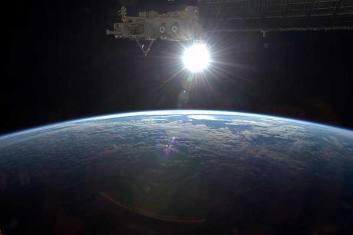
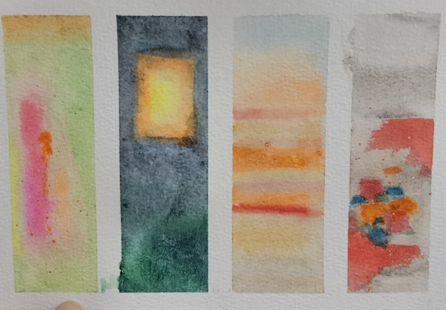
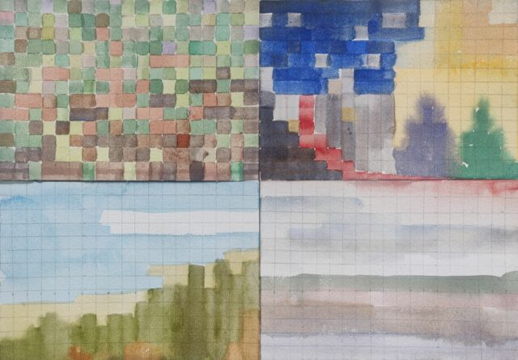
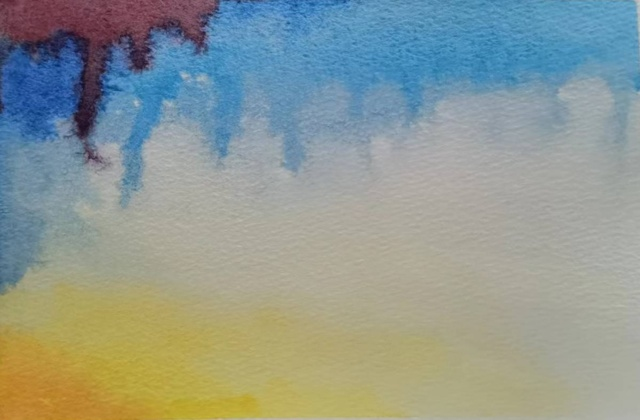
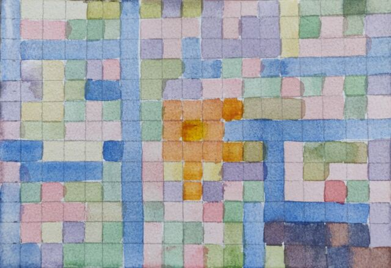
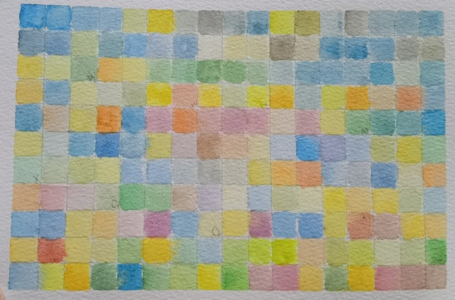

色彩艺术#
- ISBN:
9787571414672
- 开始于:
伊顿
序言#
色彩艺术的历史演变#
印象主义光线在大气中的变化
点彩派混合的颜料会破坏色彩的力量，色彩应该由纯色的点元素经过观赏者的眼睛混合起来
野兽派放弃了色彩调和的画法，回到了一主观感受的，平衡为主的简单明亮的色块涂抹形式
立体主义运用不同的色彩来表达画面的明暗度
🧑🎨表现主义恢复绘画的精神内涵 不和谐的色彩的表现性
青骑士📖 青骑士通过形状和色彩来表现内在化和精神化的体验。被归类为
🧑🎨马克斯·贝克曼新具象艺术表现非客观的物质，通常是运用集合图形和纯粹的光谱色彩来表现，并伪装成真实的可以被辨认的有形物质
超现实主义以现实作为媒介，为「非现实」的画作增添真实感
塔希主义另类、怪异的色彩和形式
重要的研究课题#
尽管色彩的研究可以分为很多方面（物理、化学、生理、心理、艺术），对于色彩艺术的初学者来说，最重要的是后三个方面。
色彩的物理性质#
待处理
买 三棱镜、小米智能 LED 灯
关于太阳#
太阳是什么颜色的？#
1976 年，艾萨克牛顿爵士 使用三棱镜将 白色 的太阳光分解出一系列的光谱色系……
看到这段的时候我陷入了疑惑 —— 太阳，不是黄色的吗？
于是查阅了一番资料。太阳是白色的铁证来自于太空拍摄的照片：

而实际上在太阳光的光谱中，绿色的成分反而是最强的 [1]，但总的来说，太阳光在可见光谱的部分是相当均匀的。
人们对太阳是黄色甚至红色的误解来自于大气层：
蓝紫光容易被大气散射
人对日出和日落时刻的阳光的特别关注，此时大气对太阳的影响更大（斜射），因此看起来更
正午时刻的太阳其实已经非常接近白色了，但人不会去直接观察
唯太阳和人心不可直视#
17 日和 👤YY 在咖啡店，为了展示 色彩适应 的存在，盯着太阳看了好几秒，以求在视网膜上印出一个黄绿色的补偿影像。
警告
这是危险的行为，可能导致 光性角膜炎 或者 日光性视网膜病变 [2]
色彩物质与色彩效果#
色彩和谐#
主观性的色彩偏好#
伊顿进行过大量有关主观性色彩的实验，具体做法是让受试者自由地画出自认为和谐，舒服的色彩组合方案。
为了使这类实验获得成功，绘画和首先必须要对色彩有基本的敏感性。如果没有对调色进行过深入研究，没有用画笔和颜料进行过相应的实践，那么就无法获得可靠的结果。
—— P20
尽管如此，为了好玩，我还是和 👤YY 在没有经过调色训练的情况下做了一些色彩实验：
四季色卡#
用颜色来描述自己对四个季节的感受：
- 四季色卡 1#
-

四季色卡 1#
👤YY画的四季色卡。- 春:
春天和 YY 之前画的心境那张有些许相似，不知道是不是巧合
- 夏:
夏天是夜空、树林和橙月。
👤YY说用了撒了盐表现夜跑时沁出的汗，虽然因为不熟悉材料没撒好，但一提到汗，和夏天有关的其他印象：急促的鼻息、昏黄的路灯，聒噪的虫鸣，也一并跟着涌现了- 秋:
秋天和春天一样短暂又流动
- 冬:
YY 的冬天的没有太多大自然的介入，更多的是夜里亮起的星星和灯火
我们聊到「伤感的空气」，对她来说是「春天的鲜花和泥土香」。 YY 的大部分春天都在读书，春季往往是不得闲的期末，期末后又常常是离别。 今晚（22.05.05）又聊到，我说伤感是因为「太好了又捉不住」，话音缓缓落下后，又觉得说怎么会捉不住呢，其实应该都捉住啦。
我想起三毛写的 《春天不是读书天》，翻来重看了一遍，虽然和文章没什么关系，现在的 YY 春天也不用读书啦，就慢慢地过吧 可现在是夏天了诶。
{kind=link}
- 四季色卡 2#
-

四季色卡 2#
我画的四季色卡。
- 春:
小草的末梢被冻得微微发红，树木又新长了一圈年轮，春天的绿色对我来说是安全又熟悉的
- 夏:
我的夏天是昼夜等分的，夜里是有木兰花香的教学楼，时不时手腕上有血流下來；白天是亮得睁不开眼的柏油路面，我和同学们顶着大太阳不知道要去哪里玩
- 秋:
秋天的天空好像比其他的季节更宽敞一些，想来「秋高气爽」很恰当了
- 冬:
冬天是冻鼻子的清冷空气，是嘴里呼出的白雾，是学院路光秃秃的行道树。冬天只是被延长了的夏夜，除了没有偶尔飘进窗来的木兰花香
{kind=link}
印象试纸#
用颜色来描述对对方的主观印象：
- LA 的印象试纸 1#
-

LA 的印象试纸 1#
检验员
👤YY。作为受试对象，本来比较喜欢这张，感觉检验员使用了强烈的倾向来形容我是一个什么样的人，而且和我的自我评价大概接近。 当然，这些都是含糊不清的。
参见
后来我更喜欢
《LA 的印象试纸 2》。
{kind=link}
- DYY 的印象试纸#
-

DYY 的印象试纸#
检测员
👤SilverRainZ。大概要画些什么，我在前一天晚上就确定好了，现在看来其实过于具体。印象应当是变化的，朦胧的，而非定性定量的。印象甚至是不可观测的，如果视线过于具体，印象会因为抗拒视线而失真。
那时候没有想那么多，我犹豫的是否忠实地画出来：这在社交里对应的是「当面评价」，「直言不讳」其实是大忌。但为了不让试纸失去意义，说就说吧。
{kind=link}
- LA 的印象试纸 2#
-

LA 的印象试纸 2#
检验员
👤YY。经过检验员一番 卖关子 讲解后，我更喜欢这张。
这次的复检一以贯之的心机（说好听点，叫「观念」），认真地沿着时间填满了每个格子，代表在这段时间对我的色彩印象。长长的时间线上用 潦草的 字母打了结，每个字母是具体的一个事件，当然我也不会告诉你是什么 :D
和
我做的试纸相比，Y 的表现让我有点羞愧：一是因为我的颜色总是落到非常具体的意象上，因为太具体而无法形成统一的印象，我的观念不够好
二是我没有那么她那般的认真，尽管我也真诚地表达了，但没有达到对等的投入程度也是一种虚伪
{kind=link}
参考#
如果你有任何意见，请在此评论。 如果你留下了电子邮箱，我可能会通过 回复你。